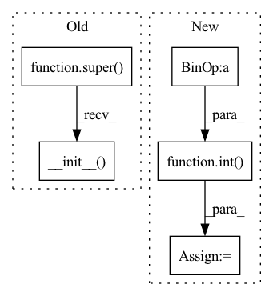

Pattern ID :260

Before Change
class Generator(nn.Module):
def __init__(self, ngf=64, n_blocks=6):
assert (n_blocks >= 0)
super(Generator, self).__init__()
self.ngf = ngf
self.n_blocks = n_blocks
DownBlock = []
After Change
nn.Conv2d(ngf, int(ngf / 2), kernel_size=3, stride=1, padding=0, bias=False),
ILN(int(ngf / 2)),
nn.ReLU(True)]
ngf = int(ngf / 2)
UpBlock2 += [nn.ReflectionPad2d(3),
nn.Conv2d(ngf, 3, kernel_size=7, stride=1, padding=0, bias=False),
nn.Tanh()]
In pattern: SUPERPATTERN
Frequency: 3
Non-data size: 5
Instances
Fragment ID: 1112384
Project Name: hasnainraz/fast-aginggan
Commit Name: 9143dd8103c15fb84102fec0102ce1515087946f
Time: 2020-06-12
Author: hasnain3257@gmail.com
File Name: models.py
M Class Name: Generator
N Class Name: FastGenerator
M Method Name: __init__(3)
N Method Name: __init__(3)
M Parent Class: nn.Module
N Parent Class: nn.Module
M File Name: models.py
N File Name: models.py
M Start Line: 8
M End Line: 59
N Start Line: 91
N End Line: 138
'>
Before Change
Returns - None
super().__init__()
self.filters = filters
self.respath_length = respath_length
self.conv2d_bn_1x1 = Conv2d_batchnorm(input_features=input_features, num_of_filters=self.filters,
kernel_size=(1, 1), activation="None", padding=0)
After Change
class MultiResBlock(nn.Module):
def __init__(self, U, in_channel, alpha=2.5):
super(MultiResBlock, self).__init__()
self.W = alpha * U
self.shortcut = conv2d_bn(in_channel, filters=int(self.W * 0.167) + int(self.W * 0.333) + int(self.W * 0.5),
num_col=1, num_row=1, activation=None, padding="same")
self.conv3x3 = conv2d_bn(in_channel, filters=int(self.W * 0.167), num_col=3, num_row=3,
activation="relu", padding="same")
self.conv5x5 = conv2d_bn(int(self.W * 0.167), filters=int(self.W * 0.333), num_col=3, num_row=3,
activation="relu", padding="same")
self.conv7x7 = conv2d_bn(int(self.W * 0.333), filters=int(self.W * 0.5), num_col=3, num_row=3,
activation="relu", padding="same")
self.batchnorm = nn.BatchNorm1d(num_features=int(self.W * 0.167) + int(self.W * 0.333) + int(self.W * 0.5))
'>
Fragment ID: 1112385
Project Name: tvs-ai/pytorch_rppgs
Commit Name: d661a9c587676745f7ee0702c4a1dd2e1d4692f6
Time: 2022-12-29
Author: 57242033+najy97@users.noreply.github.com
File Name: vid2bp/nets/modules/MultiResUNet1D.py
M Class Name: Respath
N Class Name: MultiResBlock
M Method Name: __init__(4)
N Method Name: __init__(4)
M Parent Class: nn.Module
N Parent Class: nn.Module
M File Name: vid2bp/nets/modules/MultiResUNet1D.py
N File Name: vid2bp/nets/modules/MultiResUNet1D.py
M Start Line: 74
M End Line: 94
N Start Line: 24
N End Line: 35
'>
Before Change
class LinearBottleneck(nn.Module):
def __init__(self, inplanes, outplanes, stride=1, t=6, activation=nn.ReLU6):
super(LinearBottleneck, self).__init__()
self.conv1 = nn.Conv2d(inplanes, inplanes * t, kernel_size=1, bias=False)
self.bn1 = nn.BatchNorm2d(inplanes * t)
self.conv2 = nn.Conv2d(inplanes * t, inplanes * t, kernel_size=3, stride=stride, padding=1, bias=False,
groups=inplanes * t)
After Change
self.shortcut = (not downsample) and (input_channel == output_channel)
// apply alpha
input_channel = int(self.alpha * input_channel)
output_channel = int(self.alpha * output_channel)
// for main path:
c = t * input_channel
'>
Fragment ID: 1112387
Project Name: decile-team/cords
Commit Name: 8e7f9f1d840988cde6e0b5035ab6f9ba404f5485
Time: 2021-03-25
Author: krishnatejakillamsetty@gmail.com
File Name: cords/utils/models/mobilenetv2tf.py
M Class Name: LinearBottleneck
N Class Name: BaseBlock
M Method Name: __init__(5)
N Method Name: __init__(6)
M Parent Class: nn.Module
N Parent Class: nn.Module
M File Name: cords/utils/models/mobilenetv2tf.py
N File Name: cords/utils/models/mobilenetv2tf.py
M Start Line: 30
M End Line: 43
N Start Line: 10
N End Line: 34